From the inertia-optimal ring to a stress-limited rotor you can 3D-print — with every claim split into what was measured and what was computed.
And without making braking worse. In the TIPE I split it in two: which shape stores the most energy, and what happens to braking. To test the second, a 34 g truck rolls down a ramp and is tracked frame by frame with Tracker.
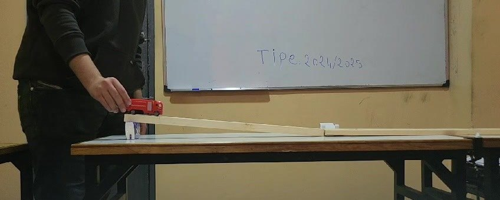
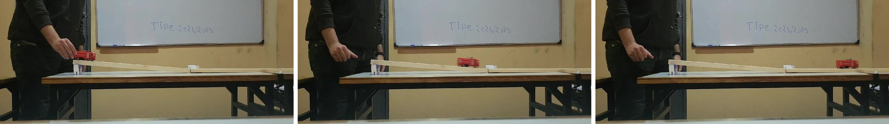
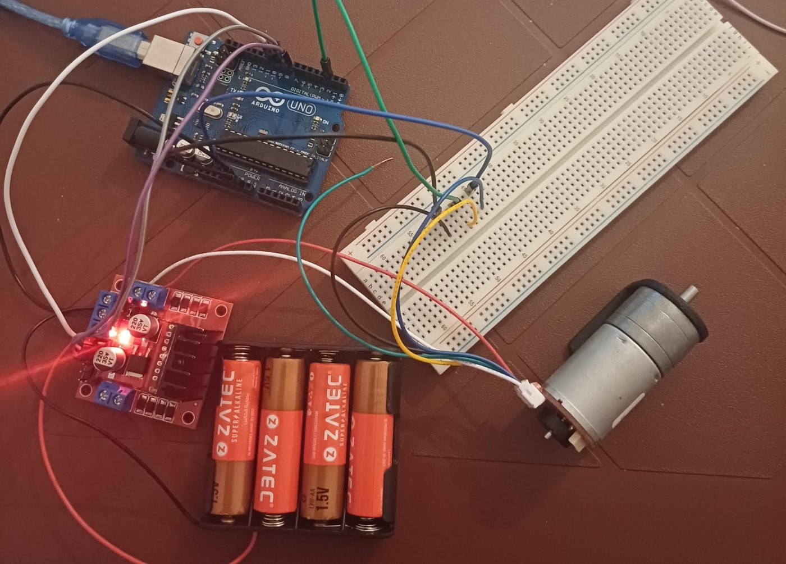
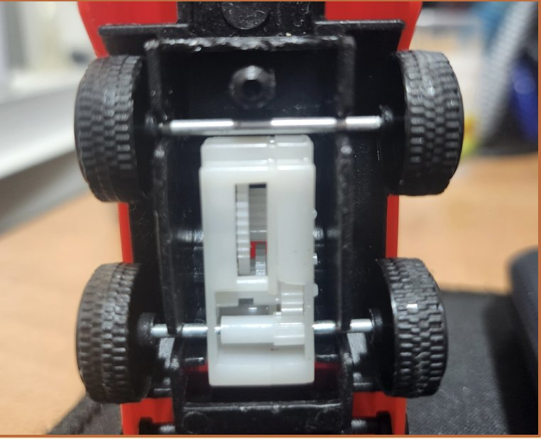
In the TIPE, the truck went 0.82 m without the spring and 1.08 m with it, and I presented that as a validation. Going back to the Tracker files later:
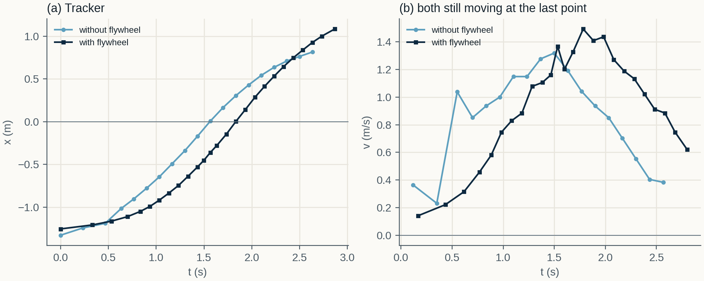
The TIPE found the circle numerically, with Fourier-parametrised curves and a constrained optimizer. The fixed-area case never converged. Both results are now proved — and the proof explains why: without a maximum radius, there is no optimum.
In a thin ring the stress is ρω²R², whatever its thickness. So the right target is the energy per kilogram at the allowable stress, E/m = K·σ/ρ, where K depends only on the shape. With that objective, the TIPE optimum — the ring — is beaten by a profiled disk.
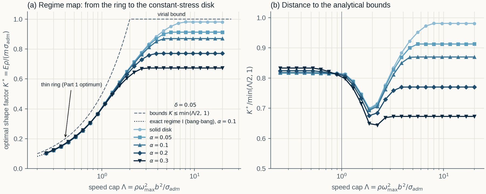
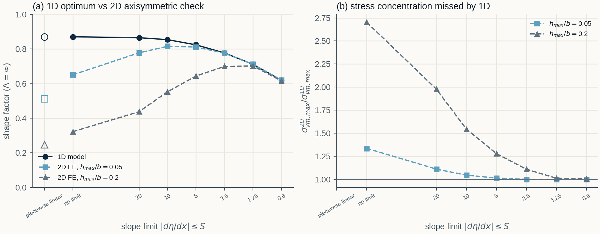
Abaqus input files for four steel rotors (CAX8R, centrifugal load), run with CalculiX 2.21. Maximum von Mises stress, MPa:
| Rotor | 1D model | My 2D FE | CalculiX |
|---|---|---|---|
| Uniform disk with bore | 574.7 | 572.7 | 570.2 |
| Slope-limited, Λ = ∞ | 574.7 | 635.3 | 630.4 |
| Slope-limited, Λ = 2 | 574.7 | 620.0 | 616.8 |
| 1D optimum, no slope limit | 574.7 | 1397.7 | 931 → 1405* |
Three rotors of radius 50 mm, printed flat as half-profiles so they need no supports: same inertia ratio as the symmetric rotor. Webs of at least 1 mm, slope ≤ 0.5, profiles smoothed so no corner re-enters. Built from the optimised profiles by a Fusion 360 script (volume within 0.05% of the Python model).
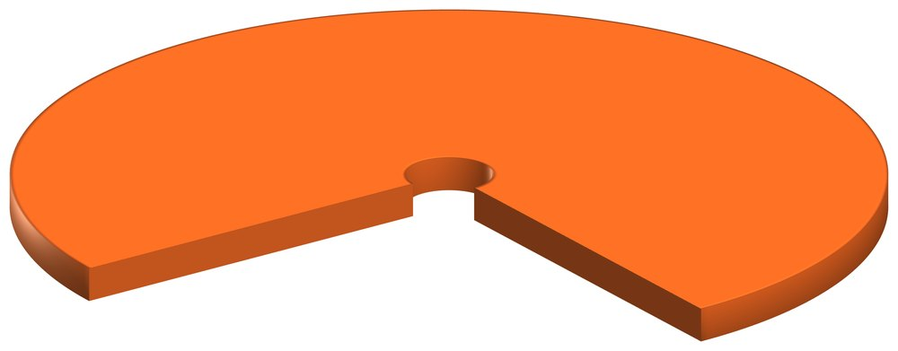
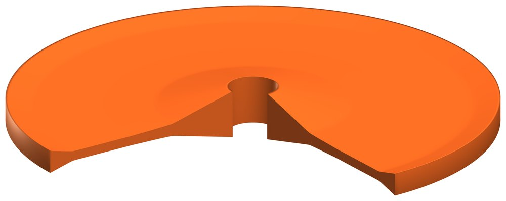
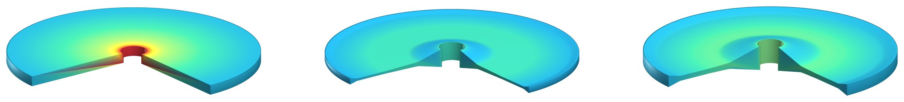
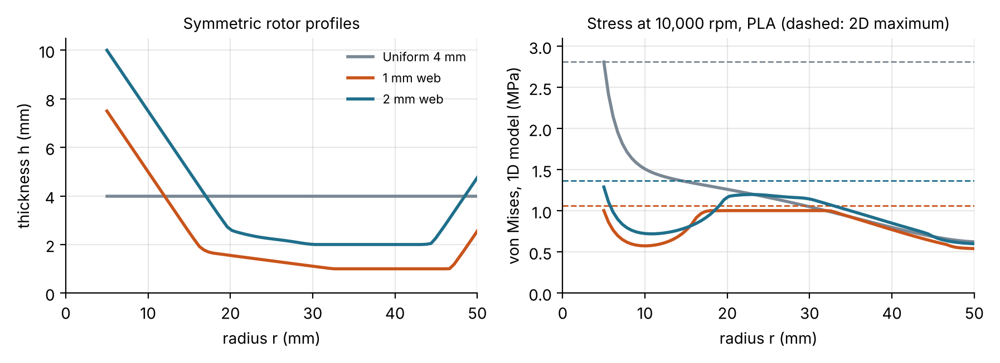
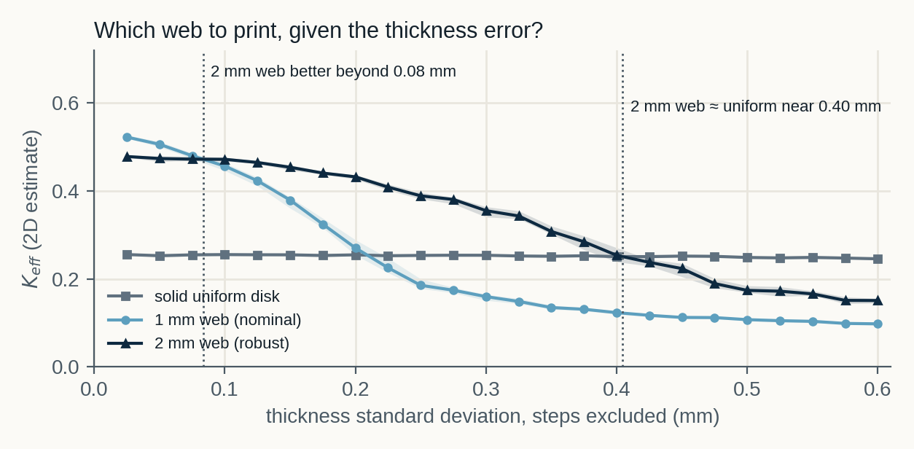
| Rotor | Mass | Energy / kg (K) | Total energy before failure | Energy at equal speed |
|---|---|---|---|---|
| Uniform reference | 38.6 g | 0.31 | 100% | 100% |
| 1 mm web | 14.5 g | 0.67 | 84% | 31% |
| 2 mm web | 27.7 g | 0.57 | 134% | 66% |
The parts are measurement pieces, not spinning rotors: they check geometry and mass distribution. I designed a trifilar pendulum, calibrated on the uniform part, that should separate the two profiles (j = 0.420 vs 0.462) by about 9 standard uncertainties with a stopwatch, 34 with 60 fps video. The predictions were frozen before any measurement.
The most useful step was re-reading my own data. The braking effect I once presented was not there. Since then, every report I write separates what is measured from what is computed.